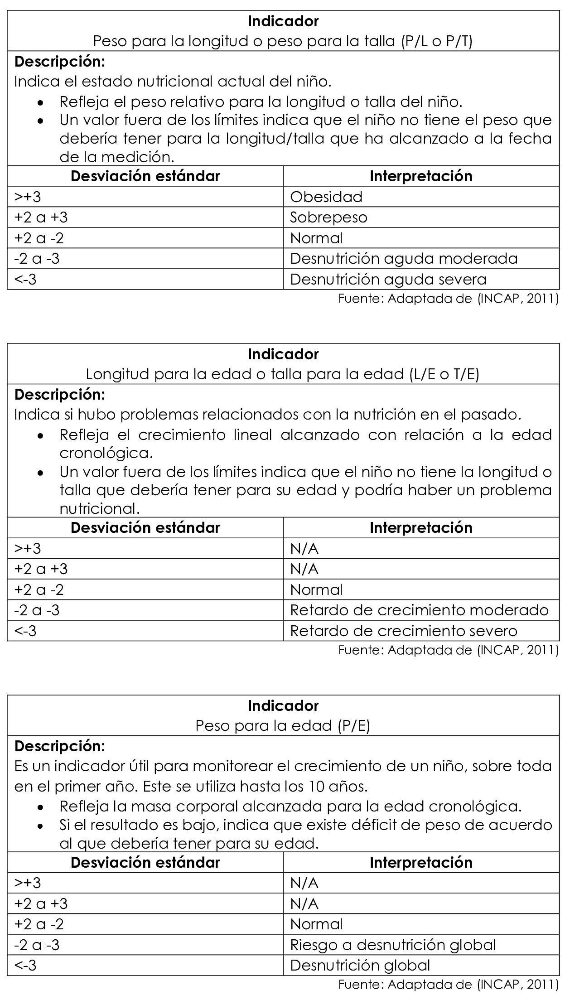

Establecer un buen diagnóstico nutricional durante cada cita es indispensable para brindar el tratamiento y consejería adecuada al paciente. Por ello, a continuación, se explica brevemente el tema.
Medidas antropométricas
Indicadores antropométricos y su interpretación según la OMS

Procedimiento para marcar los puntos sobre las gráficas de la OMS